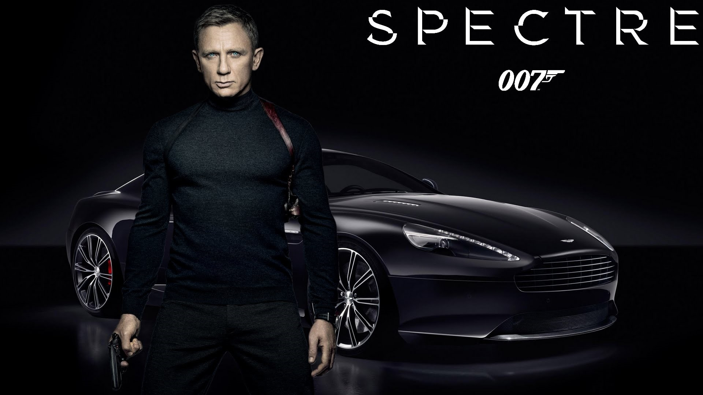
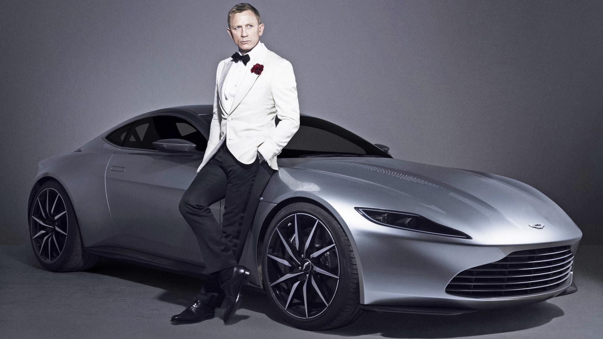
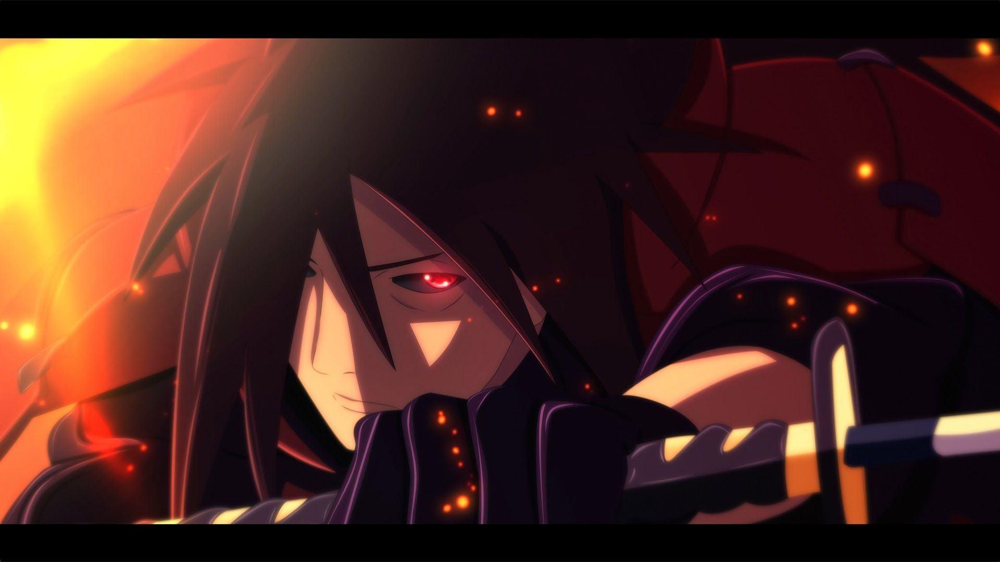
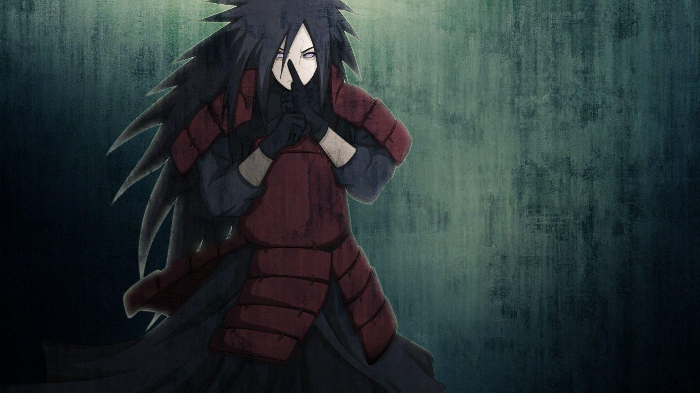
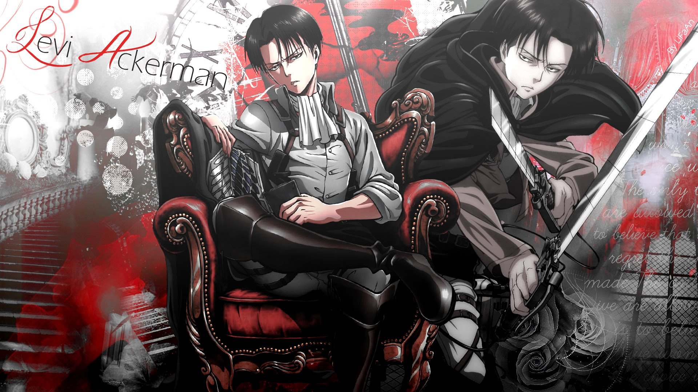
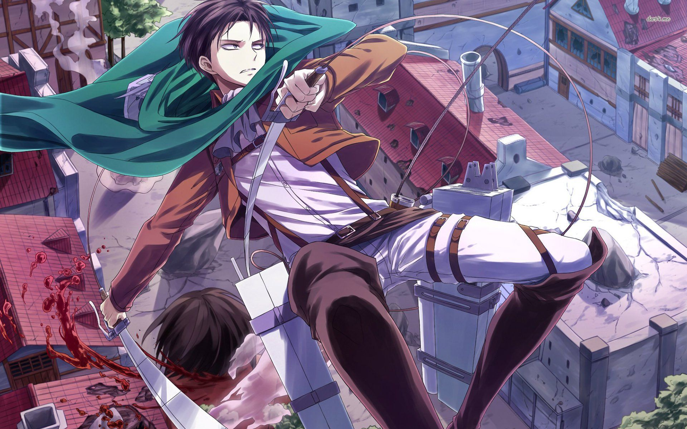

My Favourite Personalities
I have Killed many people who I disliked and and I like very few people specifically i have 3 favourite personalities
JAMES BOND
 Introduction
James Bond, British literary and film character, a peerless spy, notorious womanizer, and masculine icon.
Birth
James Bond was born in Wattenscheid near Essen, in the Ruhr region, on November 11, 1920.
Work
Bond is an intelligence officer in the Secret Intelligence Service, commonly known as MI6. Bond is known by his code number, 007, and was a Royal Naval Reserve Commander.
Popularity
Bond has been a global phenomenon that has influenced countless other characters in the film industry. James Bond films are known for their famous car chases, stunts, guns, pretty girls, megalomaniac villains, spectacular explosions, and far-fetched plot.
James Bond An Elite Agent
The character—also known by the code number 007 (pronounced "double-oh-seven")—has also been adapted for television, radio, comic strip, video games and film. The films are one of the longest continually running film series and have grossed over US$7.04 billion in total at the box office, making it the fifth-highest-grossing film series to date, which started in 1962 with Dr. No, starring Sean Connery as Bond.
Bond is an intelligence officer in the Secret Intelligence Service, commonly known as MI6. Bond is known by his code number, 007, and was a Royal Naval Reserve Commander.
MADARA UCHIHA
 Introduction
Madara Uchiha (Japanese: うちは マダラ, Hepburn: Uchiha Madara) is a fictional manga and anime character in the Naruto series created by Masashi Kishimoto.
Birth
Madara Uchiha, 1853 - 1901 Mami was born on August 19 1826, in Uchiha Fortress, Hi no Kuni. Madara had 4 brothers: Izuna Uchiha and 3 other siblings.
Work
Madara Uchiha used to work as the leader of the uchiha clan and has lead many battles winning almost every one of them except one.
Popularity
Madara was a legendary ninja whose name instilled fear in people. Obito used Madara's name to start the Fourth Great Ninja because he knew the power that the name had. The name "Madara Uchiha" had enough power to bring the Five Shinobi Nations together, which had never happened before.
Madara Uchiha The Legendary Ninja
Kishimoto created the character to provide a strong villain in the series' final arc who would face the series' protagonist, Naruto Uzumaki. This confrontation would be different from that with previous enemies and result in more of a focus on fight scenes. Merchandise has been released in Madara's likeness, including keychains, plush dolls, and figurines. In the Japanese anime, Naoya Uchida voices Madara, while Go Inoue voices him as a child.
During most of the series, Obito uses Madara's name until a criminal named Kabuto Yakushi reanimates the real Madara who becomes one of the primary antagonists alongside Obito Uchiha during the Fourth Great Shinobi World War storyline. Madara has appeared in several pieces of Naruto media, including a Boruto feature film. Many Naruto video games have featured him as a playable character.
Levi Ackerman
 Introduction
Levi Ackermann is the strongest and most talented soldier of the Survey Corps and is the leader of the Special Operations Squad. Levi with a dark past lived his life as a thug in the underground before changing his life in the Survey Corps, thanks to Erwin Smith who scouted him.
Birth
He was born in shiganshina village on 25 december 1867
Work
He is a captain in the Survey Corps, known to be the strongest soldier alive. He has a harsh and unsocial personality, but is well-regarded by his subordinates and he cares about their lives.
Popularity
Levi's popularity lies not only in his unmatched combative prowess but also in his undefeated charisma that none of the other characters could ever achieve. Levi's presence in the story is unavoidable -- in the best way possible
Levi Ackerman Undefeated captain
Levi Ackerman is the tritagonist of the Attack on Titan anime/manga series. He is a captain in the Survey Corps, known to be the strongest soldier alive. He has a harsh and unsocial personality, but is well-regarded by his subordinates and he cares about their lives.Levi is admired and considered a hero by the people inside the walls for being the strongest soldier of humanity.
Levi has straight black hair. He has a pair of sharp blue eyes that look intimidating. Although his body is rather short, it's lean and well-trained. His face always looks not interested in anything, but he keeps many things in his mind.